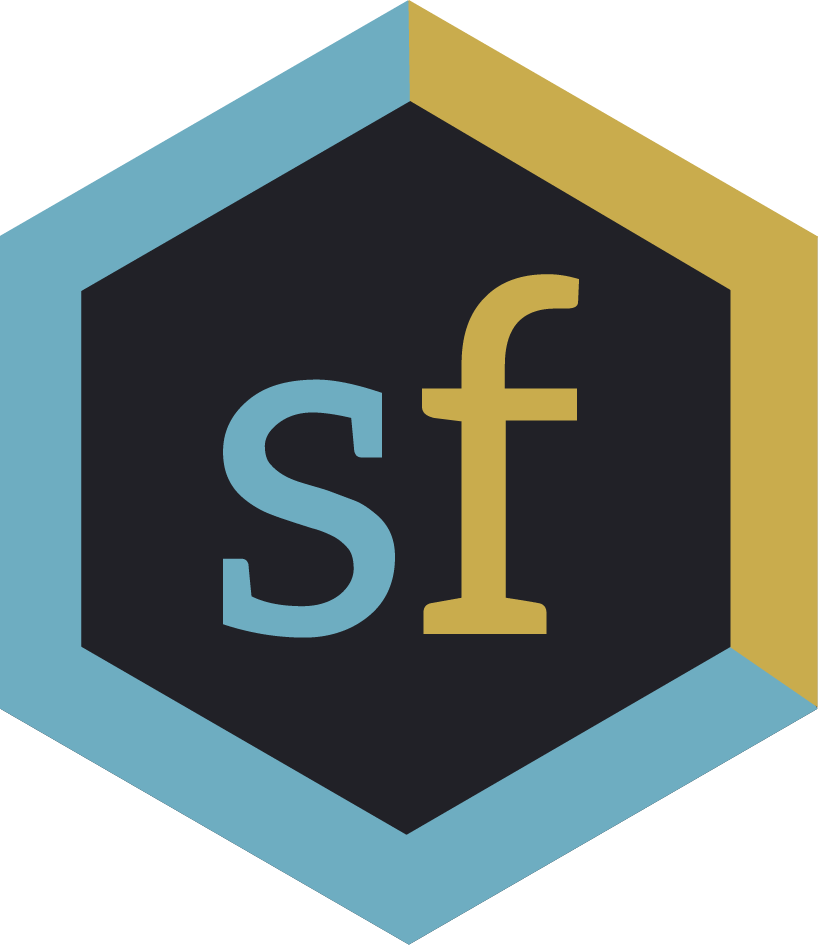

# Easy, massive-scale reuse of scientific outputs ### Richard Smith-Unna .footnote[ This work is free of known copyright restrictions.] --- ## Disclaimer Finding out about scientific publishing makes a lot of people angry. *If you have high blood pressure, stay at your own risk* --- ## The scale of science publishing  Total (as of 2016-02-05): **80,629,821** *You can get up-to-date data at http://api.crossref.org/works?facet=t&rows=0* --- # Imagine the insights we must be gaining by analysing all that literature! --- ## Ha... nope!  Just 1,435,841 (as of 2016-02-05) are legally reusable. That's *less than 1.8% of the literature*. --- ## But didn't we pay for that?  Yes. Yes we did. --- ## So why can't we...?  --- ## What CAN we do? - Get metadata and do basic bibliometrics - Work with the Open Access literature and do full-text and / or data mining --- ## getpapers. It, uh... gets papers https://github.com/contentmine/getpapers e.g. ### get PDFs (eew, I know) ``` getpapers --query nanotoxicity --pdf --outdir nano ``` --- ## More useful stuff ### get JATS XML ``` getpapers --query nanotoxicity --xml --outdir nano ``` or... ### get supplementary data ``` getpapers --query nanotoxicity --supp --outdir nano ``` OR... ### get text-mined terms ``` getpapers --query nanotoxicity --minedterms --outdir nano ``` --- ### from a search query to... - full bibliographic metadata (including citation counts - all open access fulltexts (XML and PDF) - all supplementary files and figures - text-mined terms of various biomedical ontologies - summary CSVs --- ## **Genes and proteins** mentioned in papers about nanotoxicity  --- ## **Diseases mentioned** in papers about nanotoxicity  --- ## making it accessible... Science Fair  https://github.com/codeforscience/sciencefair talk to us: https://gitter.im/codeforscience/community --- Thanks! - twitter: @blahah404 - github: @blahah - https://keybase.io/blahah .footnote[Slideshow created using [remark](http://github.com/gnab/remark)]